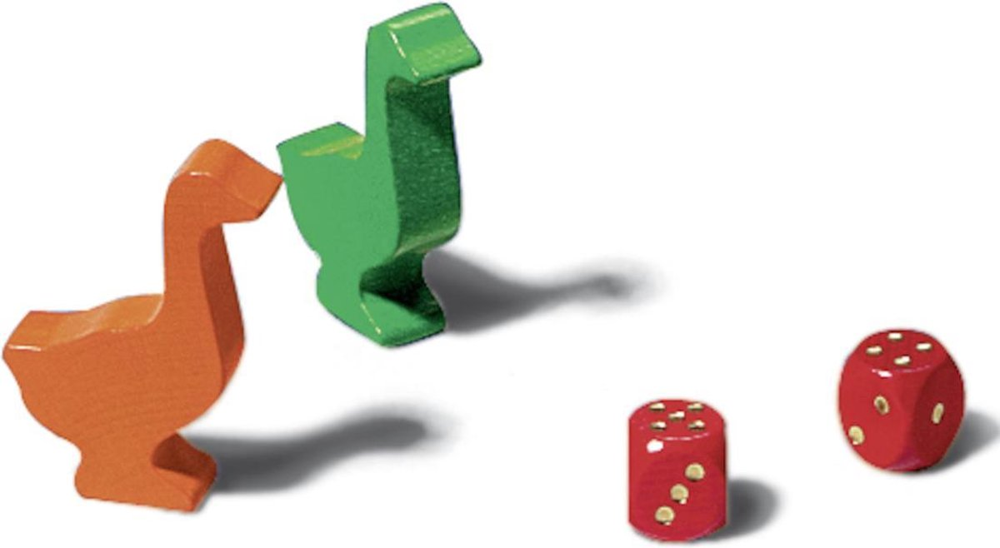
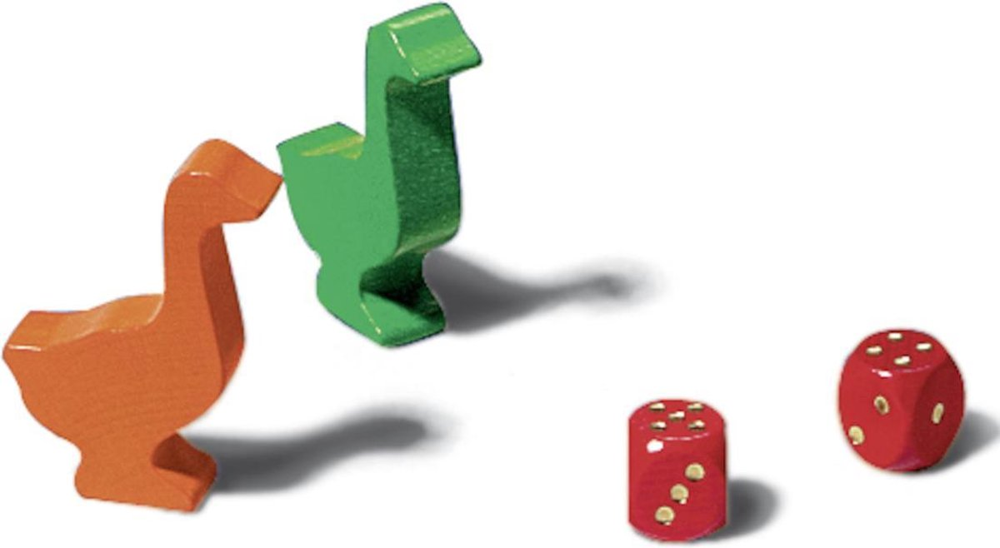
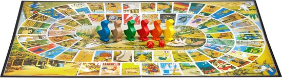
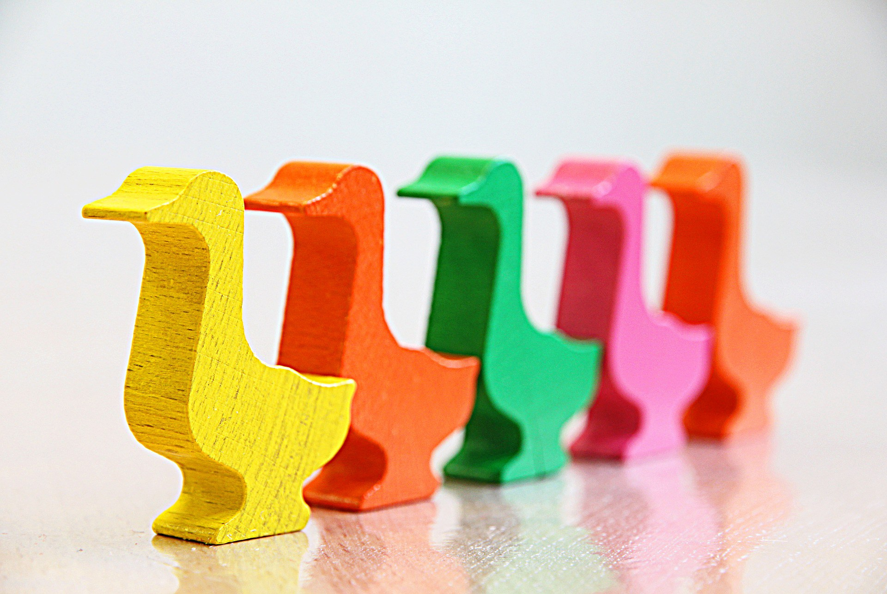
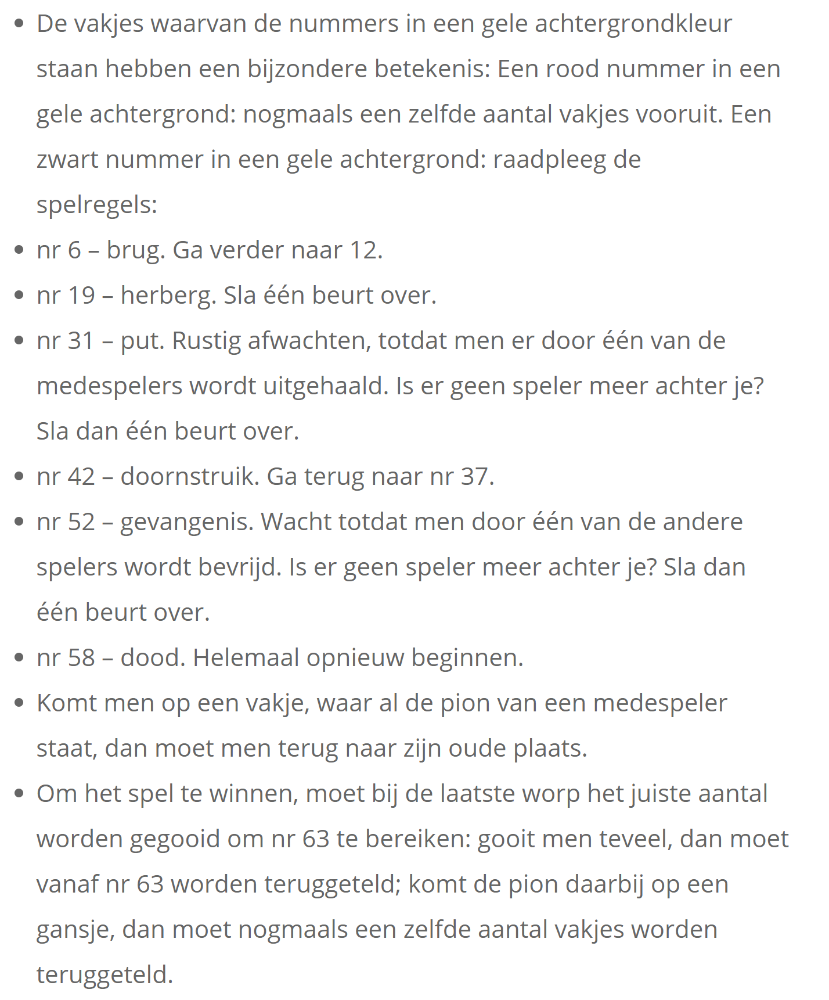
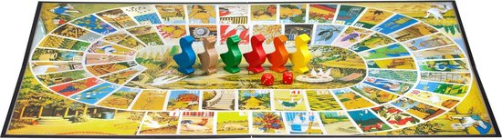
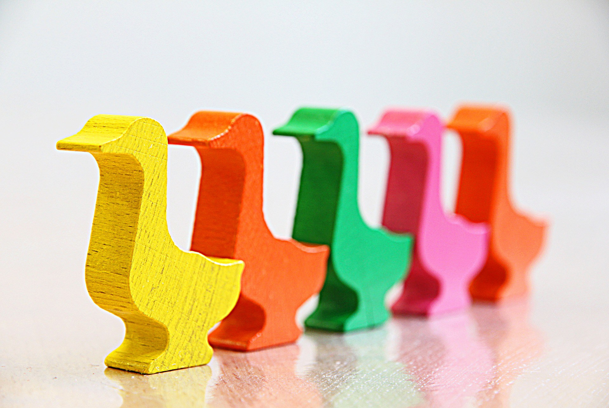
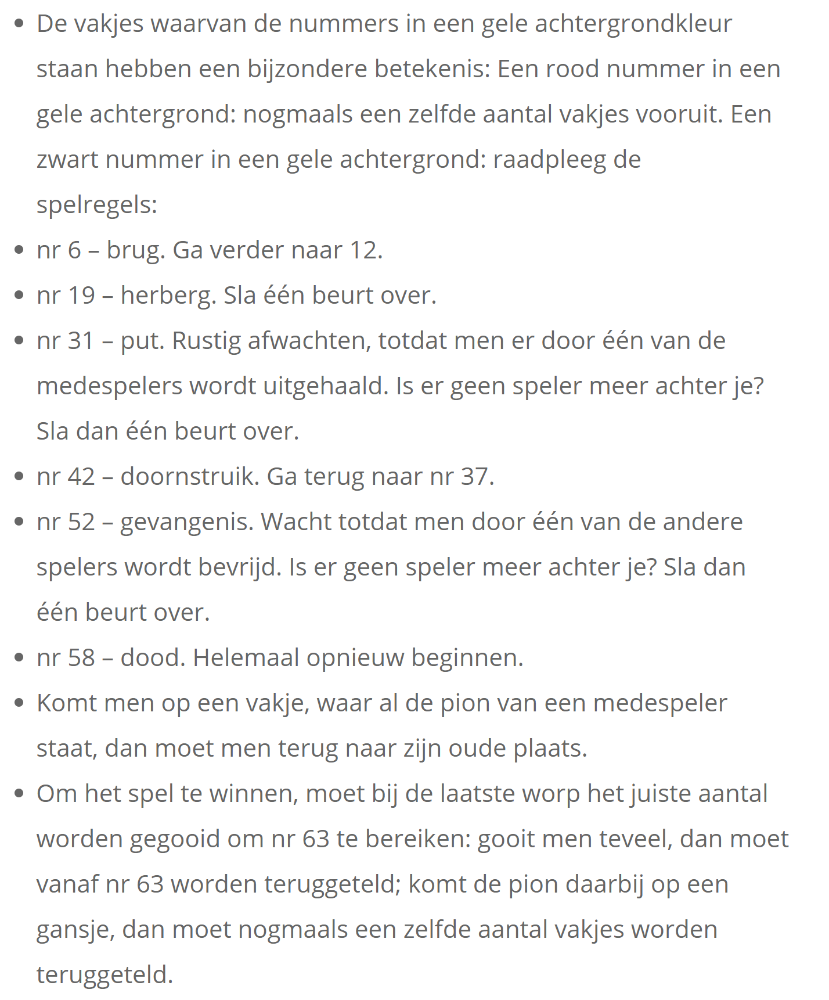

 





ganzenbord
Het bestaat uit een speelbord, twee dobbelstenen en enkele pionnen van verschillende kleuren, vaak in de vorm van ganzen. De bedoeling van het spel is in zo weinig mogelijk beurten een pion van het begin naar het eind van een reeks velden te voeren, waarbij elke speler in elke beurt zijn pion zoveel velden moet verplaatsen als men ogen gooit met de dobbelstenen. Het speelbord is voorzien van een aantal speciale velden zoals de put en de gevangenis, die de speler hinderen op de weg naar zijn einddoel. Slechts de dobbelsteenworpen zijn bepalend voor de uitslag van het spel en alleen door middel van valsspelen kunnen de deelnemers het spelverloop beïnvloeden en daarmee de kans op winnen verhogen.